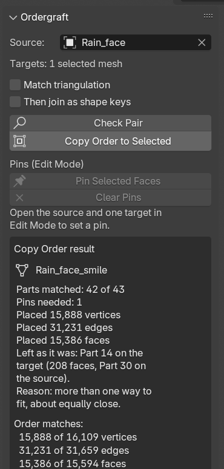
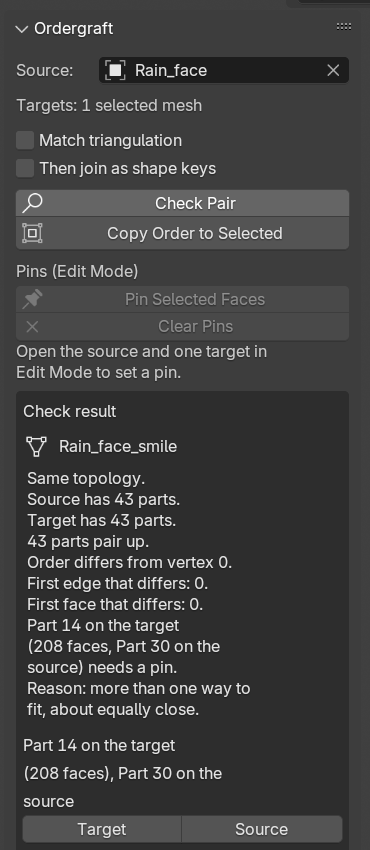
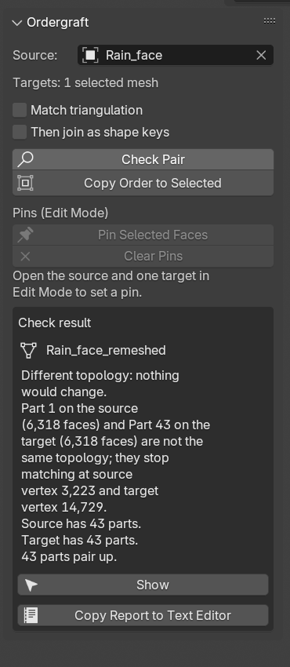

Ordergraft for Blender
A shape key that tears the face because the copy came back in another vertex order? Ordergraft copies the vertex, edge and face order to it, loose parts included.
$8 once, source included. Buy for $8


- Loose parts in one runEyes, teeth, tongue and lashes, with no faces to pick. A part it can't tell apart is listed, and two picked faces settle it.
- Triangulated copies tooAll-triangle meshes work, even triangulated after different sculpts.
- Check first, one undoCheck Pair changes nothing in your file. One Ctrl+Z undoes a copy.
$8 once, source included. Every update included.
Buy for $8GPL-3.0-or-later · Blender 4.2 LTS to 5.3, tested on 4.2.23, 4.5.16, 5.2.4 and 5.3.0 (Linux) · source code included · support@ochrestack.com · Polar checkout · refund within 14 days if we can't fix a fault · no license check · details
In Blender, for real
Rain's face is one mesh of 43 loose parts and 16,109 vertices (how).






What it does
- Copy Order to Selected gives the selected meshes the source's order. Shape keys, UV maps, vertex groups, color attributes, materials, seams, sharp edges and creases travel with their elements; shape and transform stay.
- Parts are matched by their own topology, identical ones by where they sit. Match triangulation turns flipped diagonals to the source's. Then join as shape keys adds each target as a shape key.
Details
- Buying: checkout by Polar; the download arrives by email; the zip holds the full source. To update, download the new zip from where you bought Ordergraft and install it the same way (Blender replaced 1.0.0 with 1.0.1 in our check). If it doesn't work as described and we can't fix it, email us within 14 days for a full refund (terms).
- Blender 4.2 LTS to 5.3, tested on 4.2.23, 4.5.16, 5.2.4 and 5.3.0. Windows and macOS have not been tested.
- GPL-3.0-or-later. No telemetry, no analytics, no network calls of any kind, no license check.
Not covered
- Meshes whose topology really differs (a vertex added or merged, a new retopology) are reported, not changed; there is no matching by UVs or by vertex position alone.
- Identical parts that moved a lot, and a round part turned about its own axis, are listed, not guessed.
- Hair, particle systems and Surface Deform bindings on the target are named after the copy, not re-pointed.
- A large mesh blocks Blender while it runs: no progress bar, and Esc does not cancel.
Install and first copy: Ordergraft quick start.
Words used on this page: loose part, topology, shape key
- Loose part: a piece of a mesh that is not connected to the rest, such as an eye or a tooth.
- Same topology: the same vertices joined the same way. Their positions and their order may differ.
- Shape key: Blender's name for a blendshape or morph target.
How we tested
- All triangles, smile key from a renumbered copy: Join as Shapes alone tears it, largest vertex error 0.255 m. With Ordergraft: 43 of 43 parts, 383 diagonals turned, error 0 m.
- Quads (15,594 faces): 42 of 43 parts, the 43rd listed, 1 pin needed. Join as Shapes alone: not measured.
148 tests passed and 1 was skipped on each of the four versions (the skip is Undo, which needs a window); 31 of 31 steps with real mouse and keyboard events pass on each. All on Linux. Copy Order took 1.4 s on Rain's quad face and 4.6 s on her all-triangle face with Match triangulation (Blender 4.2.23, Intel Xeon at 2.10 GHz, 4 cores, no window).
How these images were made
Rain's file was opened in the full Blender binary under a virtual display (Xvfb); every click and key press is a real X event sent with xdotool, and the screen was recorded with ffmpeg. Ordergraft was installed from the zip a buyer gets. We joined Rain's head, eyes, eyelashes, eyebrows, gums with teeth and tongue into one mesh, applied the Mirror modifiers her parts use, and made the copy by applying her Smile.L, Smile.R, EyebrowsDown.L, EyebrowsDown.R and mouth_open keys at 1.0, 1.0, 0.6, 0.6 and 0.35 to the head part, then renumbering it: the parts joined back in the reverse order and the vertices, edges and faces shuffled by a script of ours, as a round trip through another tool can leave them. The all-triangle pair is the same two meshes triangulated, the source at rest and the copy after its expression, with a different rule for the diagonals. The original index of every vertex is kept apart from the add-on, so each run could be compared with where every vertex belongs; the key errors above come from that. Blender's software renderer draws about one frame a second, so the key slider's moves in the GIFs are stepped by script, one finished frame each; every click, the panels and the Edit Mode view are real recordings. The pointer is drawn into the GIFs from the logged positions, because the screen grab has none. Nothing else was added to the captures except the two labels on the before and after picture.
Character: Rain Rig (CC) Blender Foundation | studio.blender.org, used under CC BY 4.0. We joined her face meshes and renumbered a copy. Rain is not included with Ordergraft.
$8 once, source included.
Buy for $8Polar checkout · refund within 14 days if we can't fix a fault · support@ochrestack.com